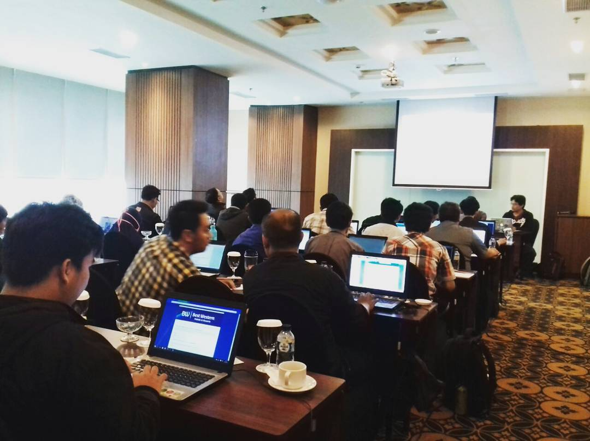
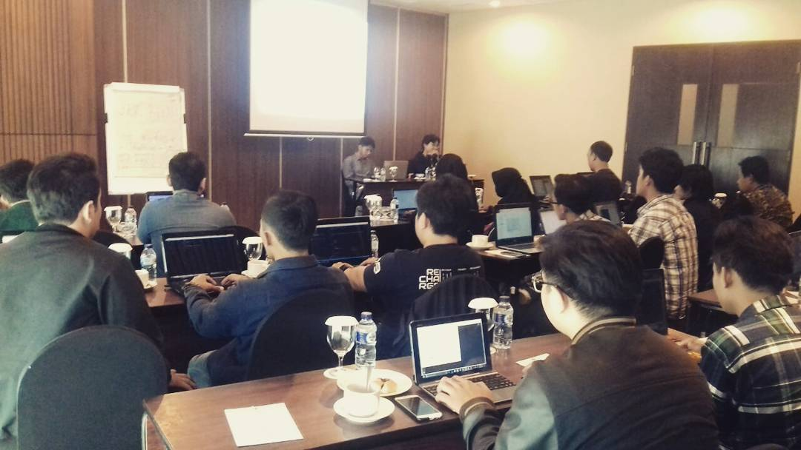

Tentang Pembuatan Web
Pembuat web merupakan salah satu peserta dalam pelatihan web di talent bandung. Berlatar belakang seorang mahasiswa lulusan dari Universitas Komputer Indonesia (UNIKOM), Bandung.
Apa itu Talent Bandung?

Talent Bandung merupakan program pemantapan kemampuan teknis di bidang kreatif digital dalam rangka akselerasi kebutuhan jumlah talent kreatif digital bagi pemberi lapangan kerja diprioritaskan untuk lulusan sekolah smk dan kampus,
dimana tidak menutup kemungkinan bagi pelajar dan mahasiswa.
Tujuan dari program pemantapan ini adalah:
1. Memperkuat Interaksi dan Kerjasama
2. Membuka Wawasan
3. Memberikan Pengetahuan Teknis dan Non Teknis
4. Menghasilkan Talent Kreatif Digital
Dengan mengikuti program pelatihan web ini agar dapat menambah wawasan dan keahlian pribadi untuk berguna pada dunia kerja.
Untuk mengetahui info lebih lanjut silahkan hubungi email 78hamdali@gmail.com.